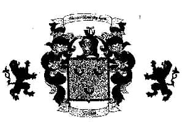

|
|
|
|
||||||||
|  |
Foster name is very common in England
Its meaning is forest warden or gamekeeper. In old genealogy and history record, the name is traced back to King Fergus II of Scotland in the year 404 AD Some Fosters were Crusaders to the Holy Land and were also in the Battle of Hastings and Waterloo. McBeth murdered a Foster and a William Foster married William the Conqueror’s sister.
The Wilkes Co., NC Fosters are descendants of the following.
Generation 1: Gilbert of Buckton (alias Forrester) (Buckton, a chapelry of Kyloe, Holy Island) was the chief gamekeeper of the Bishop of Durham. He died in 1342. His son succeeded him, in his office of forester and gamekeeper to the Bishop.
Generation 2: John of Buckton (alias Forester) born 1316, who was 26 years old at his father’s death. Wife is unknown. He had 2 sons John and Robert.
Generation 3: John Forster , of Buckton married Elizabeth, eldest daughter of Simon de Orde, Lord of Orde, County of Northumberland (died 1369), son and heir of Peter of Orde, by his wife Eleanor, daughter of Sir William Ridel of Tilmouth, Night. John Forster was with Edward, the Black Prince, at the battle of Portiers in 1357, when he defeated the French Army and captured the French King.
Generation 4: His son Thomas Forster of Buckton was a companion to "Earl" Percy (named "Hotspur") at the Battle of Otterburne in 1388. He married Joan, daughter of Thomas de Elmeden and Elizabeth Umfreville, sister and co-heir to Gilbert, Earl of Angus. They had 2 sons Thomas and William.
Generation 5: Thomas Foster (Forster), died 1415, was Lord of Etherstone for (or Adderstone) Northumberland, in the right of his wife, Elizabeth, sister and heir to Roger de Etherstone.
Generation 6: Their son Thomas Foster married Elizabeth Featheratonhaugh.
Generation 7: Their son Thomas Foster Joan Hussey.
Generation 8: Their son Thomas Foster married Margaret Browning.
Generation 9: Their son Robert Foster married unknown person.
Generation 10: Their son Sir Robert Foster married Miss Isham (daughter of John Isham, died 1624, Northhampton Co., VA.)
Sir Robert Foster was born in 1587 and died after 1666. According to family traditions he came to America, although he was buried in England. He was mentioned in the will of John Isham in 1634 and on the list of Tithables. August 1666 in Northampton Co., VA.
Sources: The Foster Family a history pub. London, England1897 by Adam and Charles Black compiled by Alkman Hennyson Foster Barham.
GEORGE FOSTER FAMILY
There were two separate families of Fosters who settled in Wilkes Co., NC. One family descended from Thomas Foster and Ann (Garnett) Foster of Orange Co., VA, whose 11 children settled in Wilkes Co., NC shortly after the Revolutionary War.
The other family descends from George Foster who was settled in Wilkes Co., NC prior to 1782. Although many descendants in both families do not consider themselves related, research on the Foster family origins in VA indicates that both families are descended from Robert Foster (c1660-c1716). Robert is the probable son of James Foster, born in Kingston Parish, Gloucester Co., VA and married there to Elizabeth Garnett. He moved to Essex Co, VA in 1692 were he died.
Robert Foster had a large family of children, eight boys and 3 girls and many Foster families in the Southern states trace back to one of the sons of Robert Foster.
George Foster (c1743-c1817) migrated to Wilkes Co, NC between 1775 and 1782. He was not listed on the 1775 tax list for Surry Co, NC which then included the territory now incorporated in Wilkes Co., NC. However, George Foster was taxed in the 1782 Wilkes Co NC tax list on 3 Negro slaves, but no land. In Captain Kees District of Wilkes Co, which include the Upper Yadkin area of western Wilkes Co. In Captain Brown’s district, which covered Lewis Fork, Stony Fork area of western Wilkes Co. He was also enumerated in the same area in the 1787 state census for Wilkes Co., with 2 males under 21, 4 females, and 3 slaves in his household in addition to himself.
George Foster acquired at least 150 acres in the Stony Fork area. In the federal census for Wilkes Co., NC George was enumerated in the 13th company (Warrior Creek/Moravian Creek/Cub Creek) area with himself, 3 males under the age of 16, 4 females, and 2 slaves. George continued to live in the Wilkes Co. area through 1800, but sometime before 1810 he moved over the Brushy Mountains to live probably near his daughter Isabel Teague, in the Little River area of Burke Co. NC. It was there that he died in 1817. In his will naming his surviving wife Sarah and 8 children:
Charity Webb, Edith Freguson, Isabel Teague, Robert Foster, George Foster, Mary Dyer, Sarah Allison and Thomas Foster. His wife is believed to be Sarah Childress and she was still living in the Burke Co. NC at the 1820 federal census.
Although it has not yet been conclusively proven.
George Foster was almost certainly the eldest son of Robert Foster (c1722-c1755) of Prince William Co. VA.
Who in turn was the eldest son of George Foster (c1695-c1789) of Fair fax Co., VA and later Charlotte Co., VA.
The later George Foster was the 5th son of Robert Foster of Essex Co, VA, who was also the ancestor of the other Fosters in Wilkes Co, NC. The descendants of Thomas Foster (c1715-c1791), a grandson of his same Robert Foster of Essex Co., VA, through his 3rd son John Foster, this means that George Foster the earlier settler in Wilkes Co, NC, was a 2nd cousin to the other early settlers in Wilkes Co, NC. -Thomas, Anthony and John Foster and their sisters Sarah Kendall, Ann Robins,Frances Jones, Phoebe Jones, Elizabeth Jones, Lucy Foster and Mildred Goforth- who have left so many descendants in Wilkes Co., NC.
George Foster (c1695-c1789) was born in Essex Co., VA and was married c1721 to Mary Singleton a daughter of Robert Singleton of Kinston Parish, Gloucester Co. VA. In his will probated in 1725, Robert Singleton bequeathed to his son-in-law and daughter, George and Mary Foster, land in Stafford (now Fairfax) Co., VA, north of the Occaquan River. George Foster of Fairfax Co. had made a gift of 150 acres of this land in Fairfax Co. c1743 to loving son Robert of Prince William Co. George and Mary lived on the remaining portion of the land until approximately 1750. When they moved to Lunenburg (now Charlotte) Co. in southern VA. George was granted several land patents on Ash Camp Creek near what is now the town of Keysville, VA. He subsequently made deeds of gifts to several of his other children.
Most of George Fosters nine children moved with him, but his eldest son Robert Foster had leased an additional 100 acres on the Broad Run in Prince William Co. VA, south of the Occoquan River on 5-22-1749. During the life of Charity wife of said Robert Foster and George and Francis his sons or the longest lived of them. The identity of Robert’s wife is Charity has not yet been recovered. Robert Foster is believed to have remained in Prince William Co., VA, where he died c1775. On August 23rd 1756 his father George Foster was appointed guardian to George, Elizabeth, Mary, and Francis, orphans of Robert Foster. These children were apparently brought to Charlotte Co, VA by their grandfather. For in 1765 George Foster gave deeds of gift of slaves to Robert Fosters children George and Mary Foster who had became of age by then.
Robert Fosters 5 known children were:
The fact that George Foster of early Wilkes CO NC named his eldest daughter Charity and his eldest son Robert suggests strongly that he was the eldest son of George Foster born of the above Robert and Charity Foster of Prince William Co., VA. There Childress families in Charlotte Co., VA who were no doubt his wife Sarah’s family.
Their children included:
(2) Edith Foster (b c1767) married Thomas Ferguson in 1785 in Wilkes Co., NC and also lived in Elk Creek Stony Fork area.
Their children include:
(3) Isabel Foster (b c1771) married a Teague, possibly the Moses Teague of Burke Co. NC, who witnessed George Fosters 1817 will, If so, then they were married c1798 and apparently have 5 sons and 2 daughters under the age of 10 years according to the 1810 federal census for Burke Co. NC.
(4) Robert Foster (b c1775) married Mary Allison in 1799 in Wilkes Co NC and lived there at least until 1840.
(5) George Foster Jr. (b 1779) married Amy Gray (daughter of John and Ann Gray) in 1800 in Wilkes Co NC and lived there in the Lewis Fork Stony Fork area, their children were: Rebecca Foster (b 1801) married (1)Thomas Davis (2)Amos Church
(6) Mary Foster (b c1781) married Elijah Dyer c1779.
Their children included at least
(7) Sarah Foster (b c1785) of which little is known except that she married an Allison prior to 1817.
(8) Thomas B. Foster (b c1788) married Frances Triplett c1810 in Wilkes Co NC and lived there until the late 1840’s when they joined the exodus of Wilkes Co families that migrated to newly opened land in Glimer (now Fannin) Co GA.
(Note one of Wilson Fosters daughters was the Laura Foster who met her fate on the mountain in Wilkes Co NC and was made famous by the 1950s hit ballad. Hang down your head Tom Duley).
Nancy Foster (b c1817) married Lankingston Hamby
George (b c1743)
Mary (b 1745) married George Ham:
Elizabeth (b c1747) married John Crofton: Francis (b 1749) married a cousin: Mary S. Foster
Joshua (b 1754) married a cousin Mary Foster. All apparently married in Charlotte Co., VA. The 2 youngest sons of Robert Foster, Francis and Joshua later moved to Union District, SC.
The children of George and Sarah (Childress?) Foster were:
Charity Foster (b c1764) married John Webb c1779 and lived in Stony Fork Lewis Ford are of Wilkes Co., NC.
Frances Webb
John Webb
Edith Webb married John Hamby: Eleanor Webb married Harden Jones: and Elizabeth Webb married James Bowman.
Charity Ferguson (b c1791) married William Holeman
Mary Ferguson (b c1794) married William McGuire Dula
John Foster Ferguson (b 1797) married Eleanor Triplett
Elizabeth Ferguson (b c1799) married William
Tugman
Sarah Ferguson (b c1801) married John Triplett
Thomas Ferguson (b c1804) married Mary Eliza Dula
The 1810 census for Wilkes Co NC shows Robert Foster with 1 male and 1 female between the ages of 10 and 15 and 1 male and 4 females under age 10.
His family is in doubt, but may have included a daughter Elizabeth Foster who married Thomas Dula in 1823. Also a daughter Lucinda Foster who married Ambrose Carlton in 1824 and a son Allison Foster to married Mary Blackburn in 1832.
Mary Foster (b 1805)
Thomas Harven Foster (b1807) married Martha Jane Church
Annis Foster (b 1809) married Ephraim Davis Nancy Emeline Foster (b 1813) married Gabriel Church
Robert B. Foster(b 1816) married Mary Church
Matilda Foster (b 1819)
George Dyer (b c1802)
William Dyer (b c1805)
Elijah Dyer Jr. (b c1818)
Hezekiah Thurman Dyer (b c1820) married a probable cousin Mary Ann Foster
Edna Dyer (b c1822)
Their family included:
George Foster (b c1811)
Wilson Foster (b c1815) married Martha Bowman and lived in Cadwell Co NC.
Sarah Foster (b c1819)
Jane Foster (b c1821)
Elizabeth Foster (b c1825)
Elbert Foster (b c1827):
Triplett Foster (b c 1829)
Robert S. Foster (b c1831)
Thomas Foster (b c1835)
William Foster (b c1837)
Sources: Personal research in the primary county records of Wilkes and Burke Counties NC and Essex , Gloucester, Prince William, Fairfax, Lunenburg and Charlotte Counties of VA. Land Patent Office and United States census records. Captain Edward R. Dittmer, USN.
Reproduced by Cecilia Duffy
FOSTER GARNETT JONES FAMILY
There has been much false information on the origins of the Foster family of Wilkes Co., NC. As a result of several years of research in the original county records of colonial VA the records can be set straight as follows: The Fosters of Wilkes Co., VA are all descended from a certain Robert Foster. Who was born c1660 in Kingston Parish, Gloucester Co., VA, a probable son of James Foster, who was the first to appeared in Glouster Co., VA in 1651. Where he subsequently lived on land that he had acquired in Kingston Parish in the vicinity of Winter Harbor and Garden Run in close proximity to land where John Garnett lived in 1678.
In the early 1680’s Robert Foster was married to Elizabeth Garnett, a daughter or sister of John Garnett. In 1692 Robert Foster, his brother John Foster and brother-in-law or father-in-law John Garnett, along with several other families from Kingston Parish, Gloucester Co., VA, bought adjacent land in Essex Co., VA near Rappahannock River.
Here is St Ann Parish on Gilson’s Run (now called Mount Landing Creek). Robert and Elizabeth raised their family of 11 children. After Robert Foster died in 1716, his widow remarried to Robert Charlesworth. She moved with him to King William (now Caroline) Co., VA to join some of her children there.
It is in Amelia Co., VA along Stock Creek where Elizabeth (Garnett) Foster died and is buried.
Robert and Elizabeth (Garnett) Fosters 11 children named in his were:
1. Robert Foster Jr. (c 1684-c1720) who married Ann Loyd but had no children. I don’t have the rest of the page to complete the names of the other 10 children.
The Ancient History
of the
Distinguished Surname Foster
The name, Foster, appeared in many references, and from time to time, the surname was spelt Forrester, Forester, Forrest, Forster, Foster, Forrestor, Forrister, and these changes in spelling frequently occurred within the family name.
Scribes and church officials spelt the name as it sounded, and frequently the spelling changed even during the persons own lifetime.
The family name Foster is believed to be descended originally from the Boernicians. This ancient founding race of the north were a mixture of Scottish Picts and Angels, a race dating from about the year 400 AD By 1000 AD this race had form into discernible Clans and families, perhaps some of the first evidence of the family structure in Britain.
From this area we get some of the most impressive names in history, surnames with unique nicknames such as the Sturdy Armstrongs, one of whom was, appropriately, the first to colonize the moon, the Gallant Grahams, the Saucy Scotts, the Angry Kerrs, the Bells, the Nixons, the Famous Dicksons, the Bold Rutherfords, the Pudding Somervilles and the most of the names ending in "son". From these fighting clans of the border the surname Foster was found in Northumberland where they were recorded as a family of great antiquity seated at Bambrough Castle with the manor and estates in that shire. Although this great border clan was nominally English they also held territories north of the border in Berwickshire but the relationships on both sides of the border were so intermingled that it would have been impossible to identify the nationality to establish a constant spelling of the name.
In England they were noted for their alliance with the Humes and the notables of the clan their Sir John Forster, Red Rowdy, and Red Rodwy’s Will. They were a notorious border clan. In 1379, Benedictus Foster was registered in Yorkshire. Notable amongst the family name during the early history was Sir John Forster. The Clans or families to the north of the border became Scottish after about the year 1000 AD and to the south they became English. Nevertheless, despite the border, many would be united clans, but strongly loyal to the defense of their respective countries.
Clan feuds became so intense that in 1246 AD, 6 Chiefs from the Scottish side and 6 Chiefs form the English side met at Carlisle and created a set of laws for all the border territory. These were unlike any laws prevailing in England or Scotland or, for that matter, anywhere in the world. For refusal of assistance when called a person could be hanged on the instant, without a trial. While Clans were on this "hot to trod" to recovery-stolen property, (from which we get the modern expression "hot to trot"), they were protected from almost all eventualities.
In 1603 the crowns of Scotland and England unified under James VI of Scotland who found it expedient to
disperse "the unruly border clans". The Border Clans were dispersed to England, Northern Scotland and Ireland. Some were banished directly to the colonies. In Ireland, they were granted lands previously held by the Catholic Irish. They signed an "Undertaking" to remain Protestant and faithful to the Crown.
In Ireland, Captain Francis Forester (died 1698) was Chief of Clooneene. His son, Major James, was High Sheriff of Galway. Mr. Foster was a 19th century Speaker of the Irish House of Commons.
The New World beckoned and the many settlers in Ireland, known as the Scottish Irish, became disenchanted. They sailed aboard the armada of sailing ships known as the "White Sails" which plied the stormy Atlantic. Some called them less romantically, the "Sailing Coffins".
Amongst the first pioneers who could be considered kinsmen of the family name Foster, of that clan or family, was James Forest, who settled in Virginia in 1654; George Forest settled in Virginia in 1608, twelve years before the "Mayflower"; Toby Forest settled in Virginia 1655; James Forrest settled in New England in 1685; Henry, James, Jasper, Walter and William Forrester arrived in Philadelphia between 1840 and 1865. Several hundred families bearing the surname Foster immigrated to North America during the 17th, 18th and 19th centuries, including that of John Foster, to Virginia in 1623.
These pioneers became the nucleus of the first settlements from Maine to the Cumberland Gap. They provided much of the stock, which produced the early presidents, and governors of the United States.
In Canada they settled Nova Scotia, the St. Lawrence and the Ottawa Valley. The family name Foster, provided contemporaries, such as Colonel Cecil Weld Forester, Lord Forester; Commodore Geoffrey Forrester, Sir James Forrest, Australian Company Chairman; Admiral Sir Ronald Forrest; General Michael Forrester; Edward Morgan Forster; novelist, short story writer and essayist; Cecil Scott Forester. English novelist, the creator of the "Horatio Hornblower" series; Sir Robert Sidney Foster, British government official; Lawrence Foster, American composer; Stephen Collins Foster (1826-1864), American songwriter and composer, He wrote "My Old Kentucky Home", "Old Folks at Home" and "Jeannie with the Light Brown Hair".
Unfortunately Foster died, almost destitute in the Bellevue Hospital in New York.